A Sparse-Basis Framework for Automatic Delineation of Minimum Road-based Landscape Units from Street-View Imagery
城市街道景观的客观分区长期依赖人工判读或行政边界,缺乏从视觉证据出发的、可复现的自动方法。本文提出一套面向道路网络的最小景观单元(Minimum Road-based Landscape Unit, MRLU)自动划分框架:以多方向街景图像的自监督视觉特征为输入,经地图匹配将点特征聚合到路网,利用稀疏自编码器学习一组可解释的「视觉基」(visual basis),并以基激活在路网上的不连续处作为景观边界,最终将路网切分为视觉同质的连续单元。
我们在维也纳与香港两座形态迥异的城市上进行实证(路网经 OSM 拓扑修复后最大连通分量比 ≈ 100%,以轻量质量分类器剔除眩光/暗/损坏图,并以贪心最大覆盖采样减少插值、沿路网图扩散 + 覆盖置信度门控填充与约束无观测区)。结果显示:MRLU 的绝对数量是尺度依赖的,而稳定的规律体现在归一化指标与组合结构上——两城共享一组近正交的视觉基(词汇),却在基的频率、组合熵与沿路网转移矩阵(语法)上显著不同,香港呈现更频繁的视觉突变与略大的视觉词汇。
关键词:街景图像;视觉表征;稀疏字典学习;景观单元;道路网络分区;DINOv2
街道是城市居民感知环境的主要载体,其视觉景观的空间组织(哪里"看起来是一片"、哪里发生"风貌转换")对城市设计、风貌管控、可步行性评估等具有基础意义。传统景观分区多基于土地利用、行政区划或专家勾绘,存在三方面不足:(i) 主观性强、难以复现;(ii) 与人眼实际感知的视觉风貌脱节;(iii) 难以规模化到全城路网。
由此,景观分区问题被转化为「路网图上的激活不连续检测 + 连通分量提取」。本文贡献:
提出 MRLU 的形式化定义与一套 7 阶段可复现流程。
多方向特征拼接 + 多路段距离衰减聚合,针对街景—路网耦合设计。
在真实数据上完成验证,并公开代码、报告与全部图件。
给定一座城市的街景点集合与路网 $G_{road}=(V,E)$,目标是输出一组 MRLU,每个单元是路网上的一段连通子图,内部视觉风貌同质、与邻接单元在边界处发生风貌转换。整体管线:
| 符号 | 含义 | 维度 |
|---|---|---|
| $Y$ | 街景点视觉特征 (pano features) | $N\times D$ |
| $G_{road}$ | 路网图(节点=沿路采样点,边=连接关系) | — |
| $Z_{road}$ | 路网节点的上下文视觉特征 | $M\times D$ |
| $X$ | 视觉基矩阵 (landscape basis) | $K\times D$ |
| $A$ | 基激活矩阵(非负、稀疏) | $M\times K$ |
| $U$ | 最小道路景观单元 | — |
每个街景点提供 4 朝向图像,经 DINOv2-ViT-B/14 编码得 $f_h\in\mathbb{R}^{768}$,拼接而非池化再 L2 归一化:
拼接保留方位信息(两侧立面、纵深差异),比均值池化更能刻画街道断面结构。
统一投影到 UTM 求米制距离;街景点用 sjoin_nearest 匹配最近道路(阈值 30 m),沿道路按 $\delta=25\,\text{m}$ 采样节点(纯 numpy 折线插值,规避 GEOS 段错误)。边分两类:
每个节点在 $R=100\,\text{m}$ 内按高斯距离衰减核加权聚合:
无覆盖节点用沿路网图扩散(谐波插值)填充,形成平滑过渡;并赋覆盖置信度 $c_i=e^{-d_i^{near}/\lambda}$($\lambda=150\,\text{m}$)供 Stage 6 门控。
稀疏自编码器拟合 $Z_{road}\approx AX$,解码器权重列即基向量(逐基 L2 归一化)。训练目标:
四项 = 重建保真 + 激活稀疏 + 沿路网平滑 + 基去冗余。取 $\lambda_{sp}=5\!\times\!10^{-3},\lambda_{spa}=\lambda_{div}=10^{-3}$。
对全部 $M$ 个节点前向得 $a_n=\text{Enc}(z_n)$。阈值 $\tau_a=0.01$,记录活跃基数 $|\{k:a_{n,k}>\tau_a\}|$、重建误差 $1-\cos(z_n,\hat z_n)$ 与激活熵 $H(\tilde a_n)$。
每条边算激活余弦距离 $d_{ij}=1-\cos(a_i,a_j)$,取 0.90 分位为阈值 $\tau_c$,移除 $d_{ij}>\tau_c$ 的边,剩余连通分量即候选单元。
置信度门控($c_{\min}=0.5$):$\tau_c$ 只在两端置信度 $\ge0.5$ 的可信边上估计与设界,避免无观测区过度切割。
random_state=42),每点 4 朝向。torch.hub,CUDA)。run_experiment.py;48 个合成数据单元测试全部通过。正式 N=500 全流程,采用完整配置:贪心最大覆盖采样 + 数据质量过滤 + 路网图扩散 + 置信度门控 0.5;路网经 OSM 拓扑修复至 LCC ≈ 100%。
| 指标 | Vienna | HongKong |
|---|---|---|
| 采样策略 | greedy 最大覆盖 | greedy 最大覆盖 |
| 质量过滤剔除坏 pano | 6 / 500 | 3 / 500 |
| 街景点匹配率 | 494/494 (100%) | 497/497 (100%) |
| 道路图节点 / 边 | 234,786 / 559,096 | 241,774 / 686,316 |
| 路网最大连通分量比 (LCC) | 99.89% | 99.82% |
| 直接覆盖节点 | 17,689 (7.5%) | 37,427 (15.5%) |
| 平均覆盖置信度 | 0.22 | 0.32 |
| 重建误差 (mean cosine) | 0.219 | 0.258 |
| 激活稀疏度 (median active /32) | 18 | 18 |
| 真信号边占比 / 激活边界数 | 20.6% / 2,530 | 16.6% / 3,870 |
| MRLU 单元数(全图 N=500,门控) | 27 | 195 |
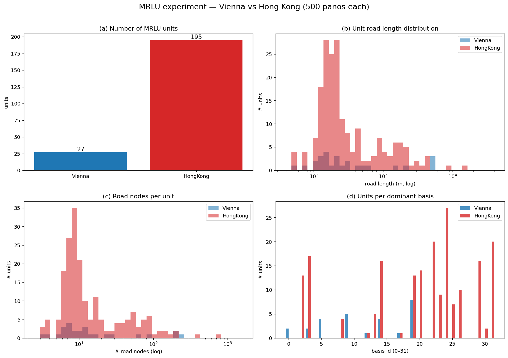
每个单元 32 维平均基激活经两城联合 PCA 投影到 3 主成分映射为 RGB(前 3 主成分累计解释方差 60.2%)。颜色相近 = 视觉风貌相近,配色两城可比。
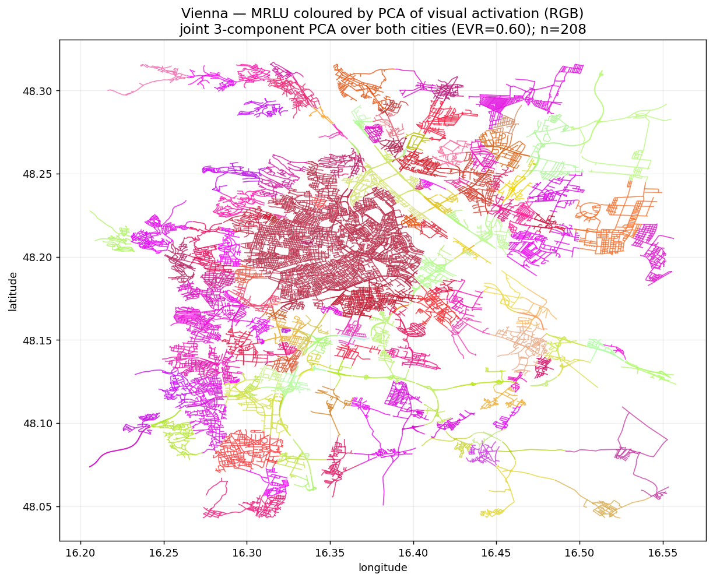
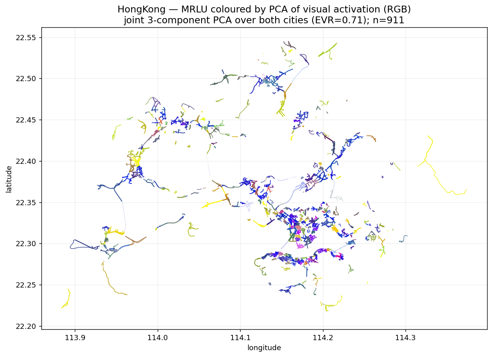
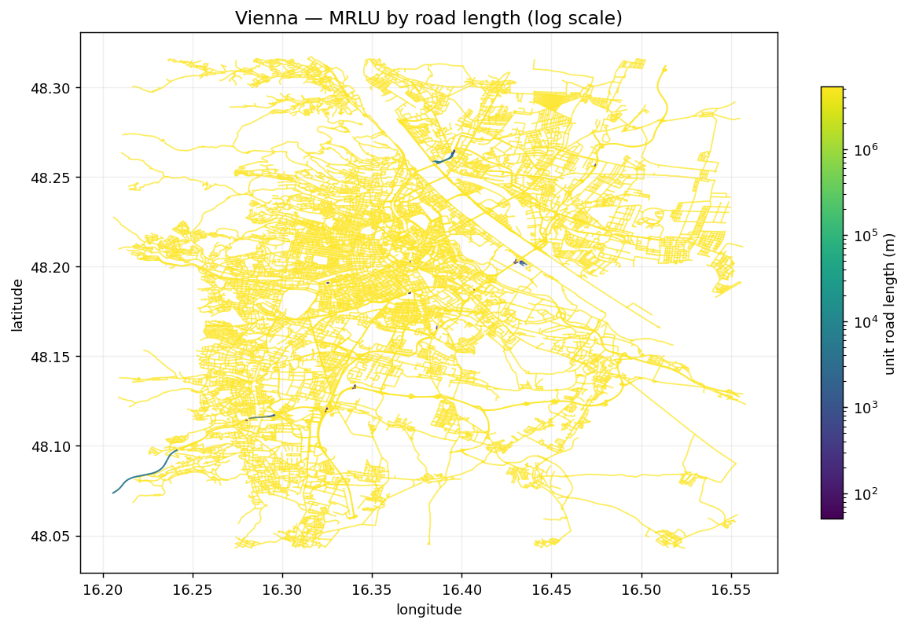
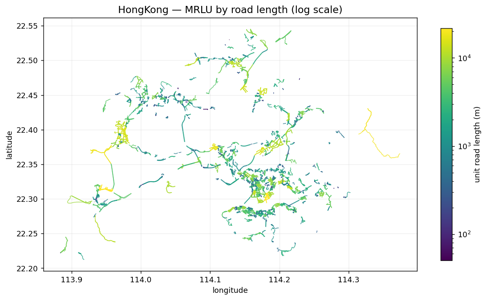
对每城在 $N\in\{500,2000,5000\}$ 上重跑,同时报告全图分割与仅覆盖子图分割。
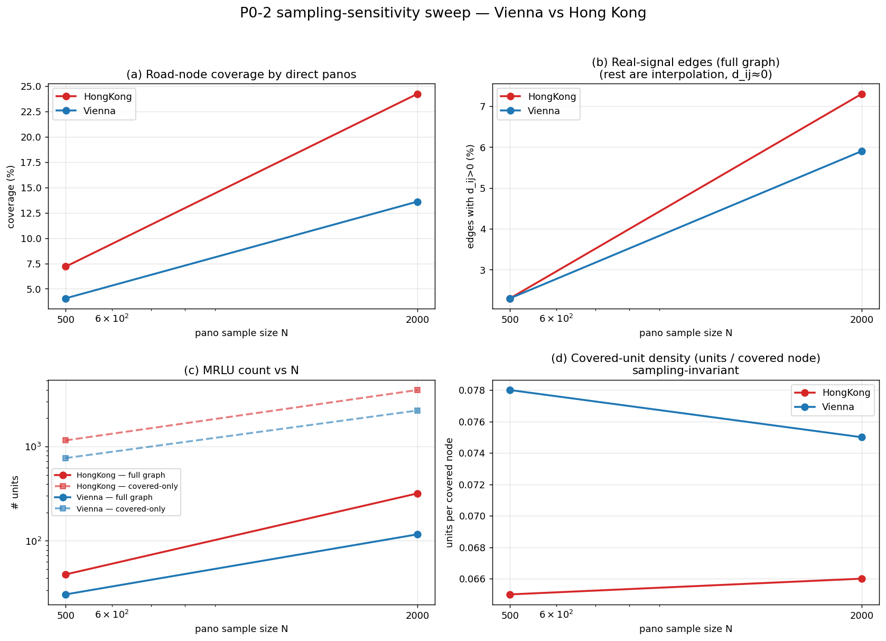
| 城市 | N | 覆盖率 | 真信号边%(全图) | 全图单元 | 覆盖单元 | 覆盖单元密度 |
|---|---|---|---|---|---|---|
| Vienna | 500 | 4.1% | 2.3% | 27 | 755 | 0.078 |
| Vienna | 2000 | 13.6% | 5.9% | 117 | 2411 | 0.075 |
| Vienna | 5000 | 24.0% | 11.6% | 350 | 4271 | 0.075 |
| 香港 | 500 | 7.2% | 2.3% | 44 | 1163 | 0.065 |
| 香港 | 2000 | 24.2% | 7.3% | 318 | 3977 | 0.066 |
把"随机抽 N 个"改为贪心最大覆盖选择——反复选能覆盖最多未覆盖节点的 pano。离线基准(覆盖率越高=越少插值):
| 城市 | N | 随机覆盖 | 贪心覆盖 | 覆盖增益 | 插值率(随机→贪心) |
|---|---|---|---|---|---|
| Vienna | 500 | 5.7% | 10.7% | 1.88× | 94.3% → 89.3% |
| Vienna | 5000 | 31.4% | 46.0% | 1.47× | 68.6% → 54.0% |
| HongKong | 500 | 7.7% | 16.3% | 2.11× | 92.3% → 83.7% |
| HongKong | 5000 | 47.8% | 77.0% | 1.61× | 52.2% → 23.0% |
完整链路:贪心采样(少插)→ 图扩散(插得平滑)→ 置信度门控(不采信远区外推)。
同一覆盖子图、同一分割规则、同一评估空间下比较 7 种表征,指标 boundary_contrast(越高=视觉边界越锐)。
| 方法 | V500 | V2000 | V5000 | HK500 | HK2000 |
|---|---|---|---|---|---|
| kmeans | 0.589 | 0.379 | 0.368 | 0.471 | 0.320 |
| dino | 0.203 | 0.207 | 0.202 | 0.314 | 0.358 |
| sae(本文) | 0.198 | 0.240 | 0.240 | 0.303 | 0.343 |
| pca | 0.182 | 0.212 | 0.208 | 0.301 | 0.341 |
| spatial | 0.000 | 0.007 | 0.009 | 0.007 | 0.012 |
| random | 0.001 | 0.002 | 0.003 | 0.002 | 0.007 |
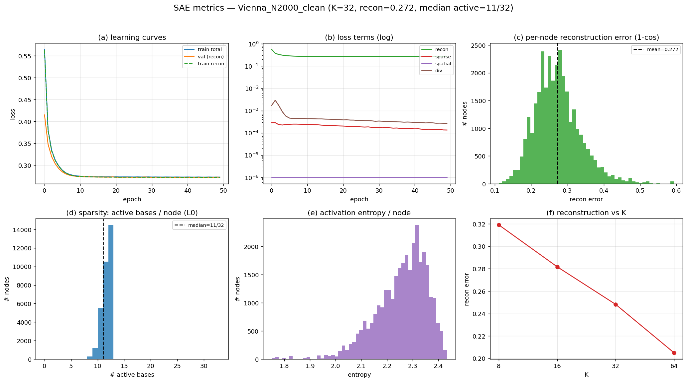
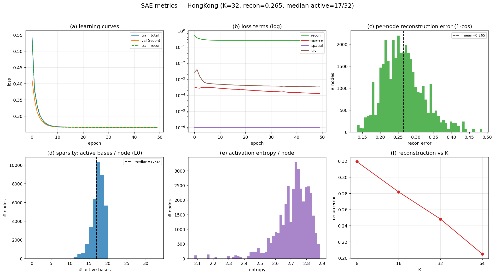
训练稳定、约 10 epoch 收敛,train 与 val 贴合(无过拟合);损失由重建项主导;重建误差 0.22–0.27(把 3072 维压到 K=32 有明显信息损失)。
对每个 basis 取其作为主导基的节点中激活最强者,映射到最近街景,拼出代表性街景并人工标注语义。
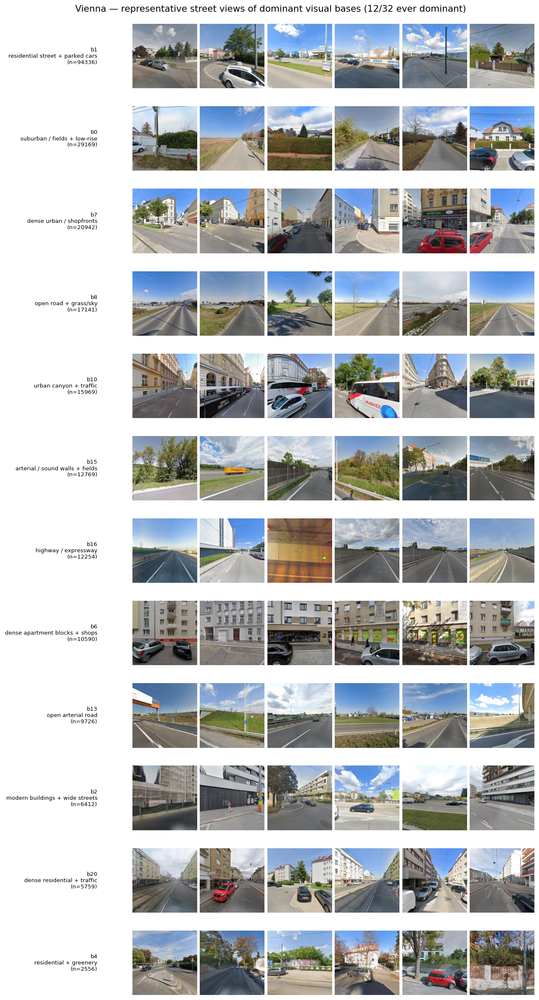
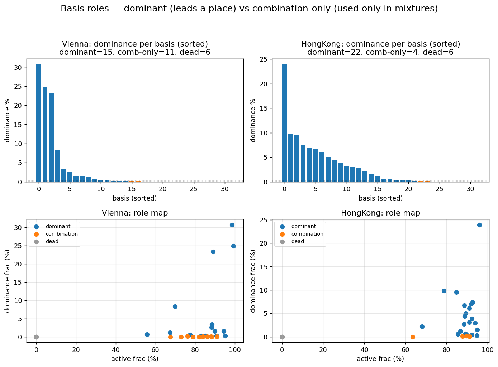
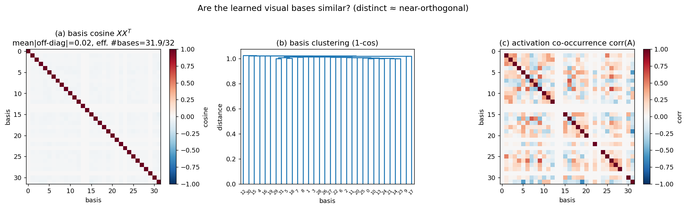
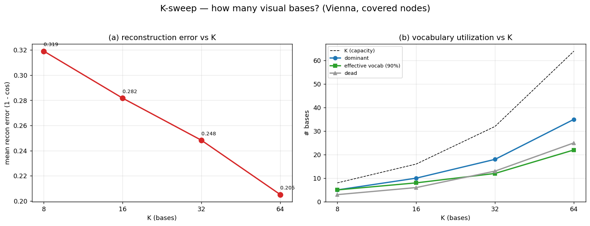
| K | 重建误差 | median active | 主导基 | 死基 | 有效词汇(90%) |
|---|---|---|---|---|---|
| 8 | 0.319 | 4 | 5 | 3 | 5 |
| 16 | 0.282 | 9 | 10 | 6 | 8 |
| 32 | 0.248 | 18 | 18 | 13 | 12 |
| 64 | 0.205 | 37 | 35 | 25 | 22 |
对数 K 轴上重建误差近似线性下降、无尖锐 elbow——街景视觉流形可压缩但非平凡低维。$K=32$ 是合理工作点。
把分割结果提升为对城市视觉结构的检验:视觉基沿路网是否非随机组织、单元是否由真实突变界定、城市差异是否在于组合语法而非词汇。
真实图平滑度 $S$ 远低于随机置换($z$ 达 −637 / −1051),且 $S_{road}
单元内余弦 $C_{intra}\approx1.0$ 远高于跨边界 $C_{inter}\approx0.70$,gap 0.28–0.30,显著性 $z$ 达 +558 / +262。
两城共享词汇,但香港转移熵与非对角质量约为维也纳 2.8–3.2 倍,词汇分布 JSD = 0.42。
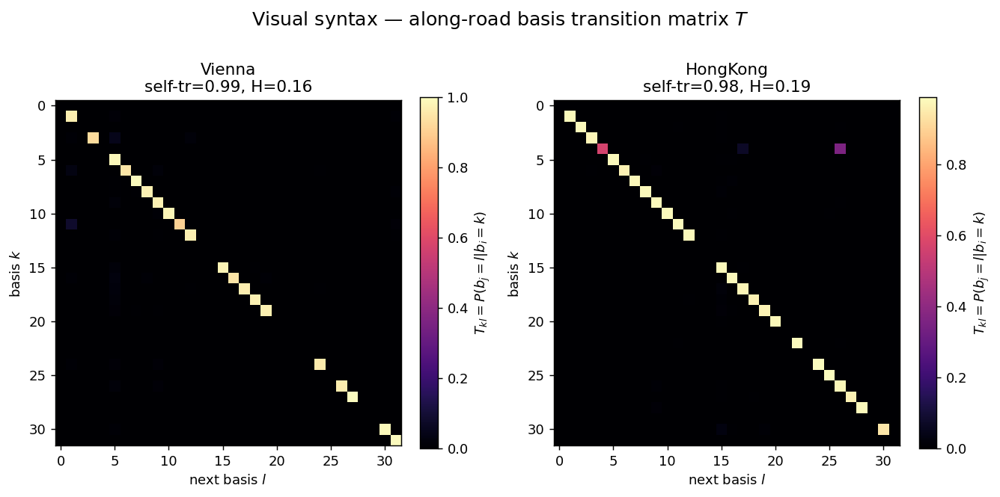
单城独立训练的视觉基若彼此可匹配,则视觉基是可迁移的共享词汇。按余弦相似度做匈牙利匹配并与随机基零模型比较:
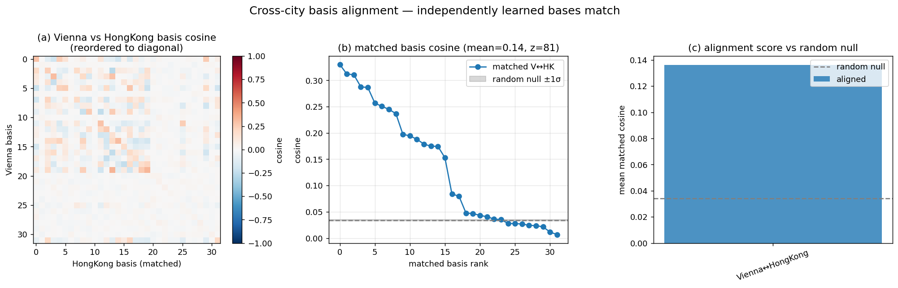
| 配对 | 对齐度 | 随机零模型 | $z$ |
|---|---|---|---|
| Vienna ↔ 香港 | 0.136 | 0.034 | +81 |
独立学到的两城基对齐度远高于随机——存在跨城复用的视觉基(共享词汇),同时也有城市特异的基。这是部分对齐而非两城基完全相同。
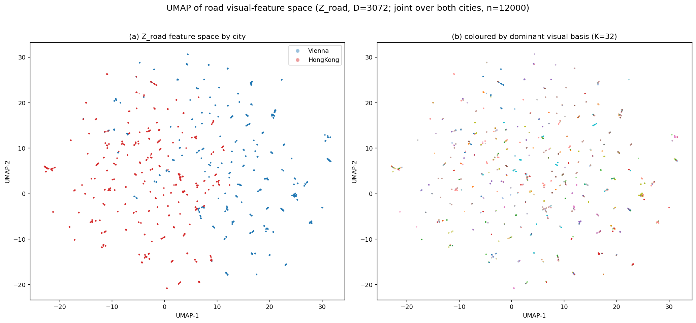
同一组 K=32 视觉基在两城均被使用,呈现不同主导模式,具备一定跨城语义区分能力,而非过拟合单城。
香港比维也纳切出更多更短单元,与其"高密度、地块异质、风貌切换频繁"相符;维也纳规整街墙产生更长同质段。
把景观分区转化为"激活不连续检测",使边界由视觉证据驱动而非行政/拓扑先验,且天然可规模化到全路网。
实证过程中定位并修复了若干真实数据特有的问题,记录于此以利复现:
| 问题 | 根因 | 处理 |
|---|---|---|
| Stage 4 训练 4.4 h | 误将插值后 total_weight>0 当覆盖判据,训练全部 23 万节点 | 改用 n_panos>0,仅训练覆盖子集(→ ~20 s) |
| Stage 6 崩溃 + 0 单元 | 每条边界边全表布尔扫描(numpy 维度错误);节点缺 n_panos | 预建 edge_meta 字典;从 Z_road 合并 n_panos |
| HK Stage 2 段错误 | shapely interpolate 在个别 OSM 几何上 GEOS 崩溃 | 改纯 numpy 沿折线插值 |
| 频繁随机 segfault | OpenMP 线程库冲突:PyTorch 的 libiomp5 与 numpy/scipy/geopandas 的 libgomp 在同一进程争抢线程池 | 进程隔离:run_experiment.py 重构为纯子进程编排器,torch 与 geo 阶段各自独立进程;_env.py 锁定 BLAS/OpenMP 线程池为 1 |
| 路网图碎片化 (LCC 60–78%) | 旧建图丢弃 OSM 拓扑、用 10m 端点网格吸附 | 以段为原子单位 + cKDTree 端点吸附;两城 LCC → ~100% |
run_stage{1,2,3,45,6}.py 子进程。这从根本上消除 OpenMP 冲突,是项目可稳定复现的前提。本文提出并实现了一套从街景图像到道路型最小景观单元的自动划分框架,核心是"稀疏视觉基 + 路网激活不连续检测"。在维也纳与香港的真实数据上端到端验证:MRLU 数量随采样尺度变化,而归一化密度、视觉句法与跨城共享词汇等规律稳定,结果在空间上连贯、跨城部分可迁移,并清晰反映两城形态差异。框架完全由视觉证据驱动、可复现、可规模化,为城市风貌的客观分区提供了一条新路径。